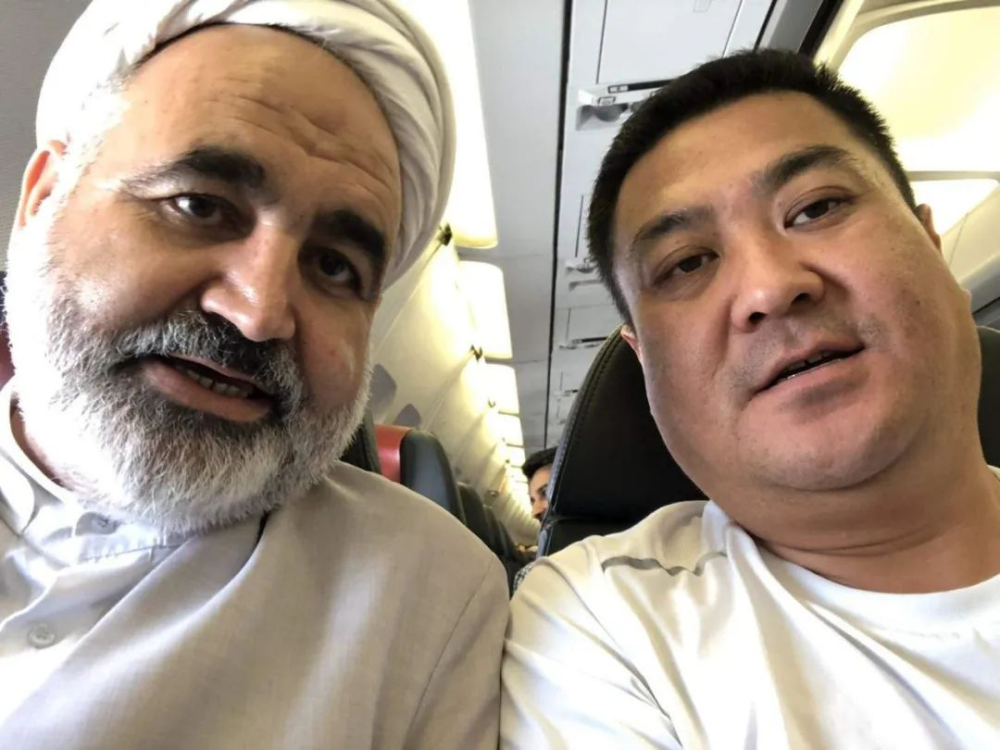

口述实录 | 万里回国后，同航班有人被确诊新冠……
原文链接 备份链接 这次疫情，也让我对祖国有了更深刻的认同，突发事件面前，我们国家的组织调配能力是一流的。 记者 | 沈 林 受访人 | 胡晓琳 最近很多在海外的同胞们都在纠结一个问题：非常时期，到底应不应该回国？或许我的经验可以给他们 …
根据伊朗卫生部消息，截至3月18日中午，伊朗累计确诊新冠肺炎病例17361例，其中5710例康复，1135例死亡。无论确诊还是死亡人数，都位居世界第三，仅次于中国和意大利。
伊朗也是目前已知最多政府官员确诊的国家，包括两位副总统、卫生部副部长、国会议员、最高领袖顾问等要员都被感染。据《联合早报》报道，伊朗政府至少12位官员死于新冠，另外13人确诊。
一位在中国读博士的伊朗留学生告诉我们，他觉得真实情况可能更严重。
他在中国生活三年多，亲历了中国的疫情，2月8日回到伊朗，准备和家人共度波斯新年（3月21日），却又遇上伊朗疫情的爆发。
他认为伊朗没有在疫情最开始爆发的时候就加强防控工作。疫情最初是从伊朗最大的宗教城市库姆传播起来的，“清真寺里的阿訇还拒绝政府不要集会的建议，他们说主会拯救我们，但病毒可不管这些，它可以攻击所有人，包括你我，还有阿訇。所以，本来可以有所作为，但是他们没有”。
伊朗另一个困境是医疗设备严重不足，在新冠患者的救治上捉襟见肘；公共信息是被筛选过的；民间几乎没有防疫措施，没有口罩文化，而且口罩已经涨到很昂贵的价格，也不太能买到；伊朗经济不太好，很多家庭都是打一天工，挣一天的生活花费，“你让他停工，这是不可想象的”。留学生说，“所有的问题都是连锁反应”。
回伊朗之前的最后一天，他去了北京一家商场，发现那里人已经很少，这说明当地人已经把此事看的很严重了，“但是在伊朗，并不是这样，人们还没有认真对待此事，这非常令人遗憾”。
和他所说的这种情况可以印证的是，3月10日，一位伊朗电视台的主持人在节目直播中突然下跪，恳请老百姓们待在家中，尽量不要出门。
不过，这位留学生认为伊朗依然还有控制疫情的机会，还有时间可以封城，避免人们在城市之间移动。“我觉得这是伊朗目前唯一能做的事情了”。
在伊朗经商近20年的中国商人张晓东也同时亲历了中国和伊朗的疫情，他2月14日从深圳出发，几经转折到了德黑兰。伊朗疫情爆发后，他曾经两次尝试购买机票回国，但都在起飞当天被告知航班取消。他从最初的焦虑不安，升级到恐惧绝望，后来转机出现，在大使馆的安排下，搭乘包机回国。
张晓东向八点健闻讲述了自己过去一个月的经历，以及他凭着20年的经验，对伊朗疫情为何如此严重所做的分析。
为了更真实地表达被访者的感受，本文以第一人称叙述。

△ 去年8月和一位宗教领袖合影。
（以下图片和视频由受访者提供）
本想躲病毒，却亲眼见证伊朗疫情的爆发
2月14日情人节，我做了这辈子最糊涂的一个决定：去伊朗。
我是个商人，业务在中东，根据地就在伊朗。从1999年开始，我就和波斯人打交道，一开始靠卖塑胶花起家，现在贸易范围做大了，主要从深圳批发电子产品卖到伊朗，再把那边的精油、坚果等特产卖回国内。我往伊朗跑得很勤，基本上两个月就要去一次，每次待上十天半个月。
2月中旬差不多是国内疫情最严重的时候，每天有几千人被确诊。而伊朗连一个病例都还没有，刚好确实有业务需要跑，我就决定飞到伊朗去待两天，既是生意，也能暂时避避疫情。
那时出国航班已经很少，我专门跑到蛇口码头坐船到香港，再飞到迪拜，最后转机到了德黑兰。
刚到德黑兰的头两天，一切和我预想的差不多，没看到任何疫情的迹象，几个伊朗朋友三天两头约我吃饭聚餐，还很关切地问起中国的情况，并且表示同情。
可舒心日子没过几天。2月19日，伊朗官方就报告了首例新冠病例，两个库姆的老人，确诊没几个小时后就死了。
这在伊朗当地几乎没有引起任何重视，但我已经有了不好的预感。第一，按国内死亡率来反推的话，伊朗感染人数应该上百了。第二，库姆是宗教圣城，如果有人感染，扩散起来会非常快。
但那时也只是预感不好，真正觉得情况不妙是一周以后。24号我开车去见客户，车上收音机用波斯语在播报，伊朗有个卫生部副部长被确诊了，这应该是世界上第一个被确诊的国家政要，病毒能传到那么高层的圈子里去，说明民间的情况肯定更严重。从听到广播的那一刻起，我开始留心观察大街上，车开过五六个路口，没看到一个戴口罩的人，我知道事情坏了。
当天，我立马改签了回国的机票，原本计划3月4日回国，改到了最近的2月25号，先飞迪拜，转机回国。25号一早，我赶到德黑兰伊玛目霍梅尼机场，一看傻眼了，航班取消，这个航班前一天还是正常飞的。我一下就慌了，开始坐在机场大厅查询其它机票，飞土耳其的、泰国的，全都满座了，当天飞离德黑兰的票一张都没了。
没办法，我只好又买了一张3月1日飞迪拜的票。从那天开始，我从酒店搬到了伊朗的办公室。经历过国内的疫情，我算是有点经验，知道酒店里流动性大，感染风险高，我打算就在办公室里自我隔离，熬到3月1日。讽刺的是，就在这期间，还有很多伊朗的朋友打电话给我，叫我去吃饭，你说这我怎么还敢去。我还劝他们也少出门，也没人听我的。
△伊朗消毒车在喷洒药水
伊朗的疫情为什么会这么严重？
那时候我已经想到伊朗会有今天的局面了。
伊朗是一个很特殊的国家，你说他民主吧，确实很民主，大家都随着自己的性子来。周末晚上，一定是朋友在一起聚会，吃饭聊天，喝酒抽烟，他们觉得忙了一个星期了，周末必须要放松，享受生活，天塌下来也不管，该玩还得玩。
但和欧美不同的是，伊朗信息相对闭塞。还有20%的人在用最老款的功能手机，没有上网功能。即便能上网，网速也非常慢，更别说浏览国外的信息。所以伊朗民众的信息来源基本上就是国内新闻，由于伊朗官方在早期对疫情存在瞒报，这就导致很多人觉得这事没那么严重。
再有，伊朗是一个宗教国家，偏偏疫情又最先爆发在宗教圣城库姆，这是疫情不受控的一大原因。在伊朗，宗教是大于一切的，连法律都是在宗教的基础上建立，绝对没有哪个政府敢说要关闭库姆的教堂。这就等于火已经烧起来了，但你没法扑灭它，只能眼睁睁看着。很多伊朗人不是不知道危险，但他们的信仰就是，宁愿死我也要去朝拜。
还有一个，口罩，伊朗人不是不愿意戴，而是买不起。你知道伊朗的口罩被炒到多少钱一个吗？15万里亚尔，差不多是30块人民币。伊朗人收入是多少呢？我给伊朗职员发的月薪是差不多800块人民币，在当地已经算中上水平。对他们来说，一个口罩就是一天的收入，换成我们自己，恐怕也不见得会买吧。
伊朗的医疗条件在中东还算不错，医生能力很强，脑科医生在世界上都是有名的，但硬件上有些欠缺，因为美国一直制裁它，很多最新的医疗设备没法进口。伊朗的药品基本上都是国产的，和印度差不多，做仿制药，又便宜又好。
但在疫情的冲击下，伊朗的医疗体系崩盘了。因为医疗资源相对不足，伊朗政府在一开始就要求所有医院都要收治新冠病人，这就导致了医院成了交叉感染的毒区，这有点像早期的武汉，所以很多伊朗人即便有了症状，也不敢去医院。
即便是这样，医院也面临床位不足的问题，他们只能选择性地收治重症患者，如果你发烧到39度以上，或者呼吸困难，那么医院会给你一个床位，否则就只能领到一些药片，回家隔离。我从视频上看到很多伊朗人在医院外晕倒、死去，其中很多是孩子。

△在回国的包机上。
航班取消，大使馆的包机救了我的命
煎熬5天以后，3月1日，我再一次来到机场，最担心的情况还是发生了，航班又被取消。
我不算是个胆小的人，之前伊朗几次大规模游行，爆发冲突，开枪死人，我都经历过，但都没有这一次来得害怕，平时闹得再凶，我们作为华人也能自保。但传染病不长眼睛，不分国籍，只要被染上，我们也得死。
我立马联系了中国驻伊朗大使馆，这个电话救了我的命。大使馆的人很清楚当下的局势，工作人员告诉我说，他们已经在筹划撤离，让我把资料发过去，找个安全的地方等候通知。
当天，和我同去机场的还有两个深圳的朋友，他们是上市公司派来公干的，上头的命令是尽早回国。原本我们是一趟飞机回国，航班取消以后，他们马上计划了另一条路线，从德黑兰飞到莫斯科，再飞北京，最后回到深圳，第二天就有票，问我要不要一起。
我征求大使馆工作人员的意见，他们说最好不要这样走，转机三次，接触的人太多，反而更不安全，还不如待在家里等，回国的飞机一定会把我们接回去。
我当时想，还是相信祖国吧，就在电话里报了名，序号是287，中国在伊朗滞留的华人差不多1000人（常住的有3000多，因为春节回去了2000多）这说明大使馆已经筹划撤侨有一段时间了。
没过几天，我接到了电话，撤离方案已经定了，总共6架飞机，由南方航空承运，确保想回国的人都能回。头两班留给了留学生，飞到兰州，费用由国家承担。后四班安排给我们这些做生意的和旅游的，费用自己出，4100多，算是成本价。按照报名顺序，我被安排在3月9日起飞，降落郑州。大使馆给同航班的人建了微信群，有120多人。
有件事情我必须要说一下，大使馆工作人员真的是很辛苦。确定航班以后，其实出了不少状况，因为大量华人都不在德黑兰，而当时伊朗国内已经封锁道路了，怎么让他们准时赶到机场就是一件麻烦事。
我印象很深的是一个老太太，和她爱人来旅游，结果被困在一个岛上的酒店里，那地方离德黑兰至少还有两三天的路程，更要命的是，她爱人已经被确诊感染了，当地医院也不收。那个老太太在群里发的语音，听着声音都快哭出来了。后来，在大使馆的介入下，他们靠着一本中国护照，一路闯卡，最后成功坐上了回国的飞机，真有点像《战狼2》里的情节。
还有一个让我很受触动的是，海外华人动用各自最大的力量互相帮助，有帮忙做翻译的，帮忙打车的，帮忙订酒店的，这种例子实在是太多了。我也帮了两个来旅游的阿姨，她们当时被困在大不里士，没有交通工具可以来德黑兰，语言又不通，眼看着要错过航班了，只能干着急。我刚好在那边有朋友，就赶紧让他帮忙租了辆车，价钱随便开，唯一的要求就是要连夜把这两个阿姨送到德黑兰来，一路上开了12个小时。我还给她们提前订好了酒店。这两个阿姨我到现在也没见过面，她们来得晚，被排到了下一趟航班。

△张晓东乘坐的包机
撤离过程6次测体温
心惊肉跳怕被查出异常
终于等到了撤离的日子。
3月9日，我早早地就赶到了机场，机场里已经没什么旅客了，所有的工作人员都穿着防护服，全套武装。因为疫情，我的旅游签证延期了一天，按规定需要缴纳罚款，换取通行单。就这么一个简单的事情，花了两个多小时才办好。
那个时候，伊朗机场已经几乎停摆了。我在出入境大厅看到了两个中国留学生，一男一女，应该不到20岁吧，蹲在地上哭。他们原本和我同一班飞机回国的，登机牌都拿在手上了，但因为是留学签证，需要伊朗移民局批一个出境签，碰上移民局放假，这俩孩子就走不成了。
我会说波斯话，还帮他们和机场的工作人员说情。我说移民局放假了，你让这俩孩子怎么办，能不能特殊照顾一下。对方说不行，没有上头的文件，他也担不起这个责任。不知道这俩孩子最后回来了没，真是一件挺揪心的事。
1点半准时登机。从那一刻开始，中国的专业和高效就和伊朗形成了鲜明的对比。
上飞机前，所有人要测一次体温，四个人一组，测一个上一个，算上进机场和过安检测的两次，这已经是当天第三次测体温了。测完后，每人领到一个N95口罩，之前戴的全都要换下来扔掉。
飞机是波音787，每排有9个座位，3个3个隔开。不能挨着坐，要把中间的位置空出来，相当于每排坐6个人。工作人员全都穿着防护服，听说已经不是空乘了，都是郑州疾控部门派人经过航空培训上岗的。广播不断重复，让我们全程尽量不上厕所，不喝水，不摘下口罩，因为谁也不知道飞机上有没有病毒携带者。
大概起飞两小时后，工作人员又来测了第四次体温。这次就出现状况了，光我看到的就有3个人被请出了座位，带到最后几排，离我最近的一个就坐前两排。人们一下子就警觉起来了，我也紧张得不行。一是怕自己也会被请出来，二是怕感染，毕竟我们要在这么一个密闭空间里待上6、7个小时。
北京时间3月10日凌晨1点多，飞机降落在郑州机场，没有人欢呼，也没有想象中的激动场景，可能大家都知道更严格的检查还在后面吧。果然，我们被要求10人一组下飞机，接受海关检查。平时是要走出入境大厅的，这次海关临时在外面搭了一个检测点。所有人摘下口罩，对比一下护照上的照片，然后领一支温度计，夹在腋下，测了第五次体温，因为凌晨的气温很低，再用扫描枪可能就不准了。
这一次，又有两个人出现了异常，直接被等在一旁的救护车拉走了，我们其他人坐上了大巴，前往隔离点，大巴车上也是隔着坐的，一辆车坐了没几个人。
差不多开了一个多小时，到了郊区的一家度假酒店。等待我们的就是最后的终极检查了，专业的医护人员，三对一检查，先测体温，然后让你嘴张开，用探测棒刮喉咙，又抽了两管血。探测棒的结果几分钟就出来了，阴性阳性。血液样本要送回医院。这时候，又有两个人被带走了，那基本就是确诊了。
我算了一下，这一趟行程，前前后后总共测了6次体温。每次检查心都跳得厉害，就怕听到那句，“麻烦您出来一下……”。
△回国的包机上。
终于可以睡上一个安心觉
目前，我正在度假酒店里接受14天的隔离。
酒店条件很好，房间够大，一日三餐送到门口自取。房间里还有一个体温计，每天早晚自己测量两次，把情况汇报到群里。如果有其它不适症状，或者需要心理干预的，也可以在群里提出来。
对我来说，最好的事情是终于可以睡上一个安心觉了。
在伊朗办公室的那两周，我几乎夜夜失眠。窗外经常能听到消毒车开过喷洒药水的声音，手机里不断收到朋友发来的视频，不知道哪个医院门口又有人卡着脖子倒下。这一切曾经离我那么近，让我不由自主地发抖害怕。
现在还有很多海外华人在经历我所经历过的一切，有些人的处境恐怕比我更糟。但无论如何，我把自己的故事拿出来分享，我想感谢所有为我们的平安回国付出过努力的工作人员。你们的专业和高效，打消了国人的疑虑，让我们得到了妥善安置。你们所代表的中国形象，让我从心底里觉得温暖和自豪。
原文链接 备份链接 这次疫情，也让我对祖国有了更深刻的认同，突发事件面前，我们国家的组织调配能力是一流的。 记者 | 沈 林 受访人 | 胡晓琳 最近很多在海外的同胞们都在纠结一个问题：非常时期，到底应不应该回国？或许我的经验可以给他们 …
原文链接 备份链接 《小酒馆》，是燃财经旗下的故事栏目，真人真事，讲述创新经济时代的人生百态。本文为第35期。 作者 | 金玙璠 孟亚娜 陈琪 编辑 | 魏佳 “新冠疫情，中国打上半场，世界打下半场，华人留学生打全场”。这虽然是一句调侃， …
原文链接 备份链接 隔离在伊朗的日子 口述 | 孙建龙 采访、文 | 杨溪 1 当地时间3月5日上午十点半，我的一位伊朗朋友在德黑兰南部汽车站等待巴士，准备前往另一座城市伊斯法罕。 人比以往少了许多。他看到一支车队浩浩荡荡赶到汽车站，皮卡 …
原文链接 备份链接 伊朗卫生部7日公布，截至当地时间7日上午，伊朗新增新冠肺炎确诊病例1076例，累计病例数升至5823例，其中死亡145例，治愈1669例。 地处欧亚大陆“十字路口”的伊朗，向外扩散的风险日渐增加。 实习记者｜ 戴敏洁 …
原文链接 备份链接 随着新冠肺炎疫情的蔓延，在过去的一天，韩国、意大利、伊朗等多国新增确诊数继续上升，中国以外累计确诊病例超过15000例。 世卫组织：部分国家对新冠肺炎准备不足 当地时间3月5日，世卫组织在日内瓦召开新冠肺炎疫情例行发 …